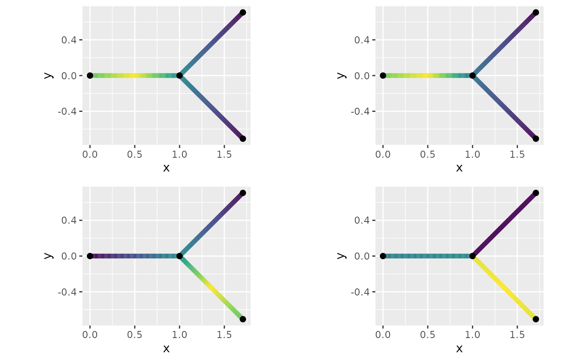
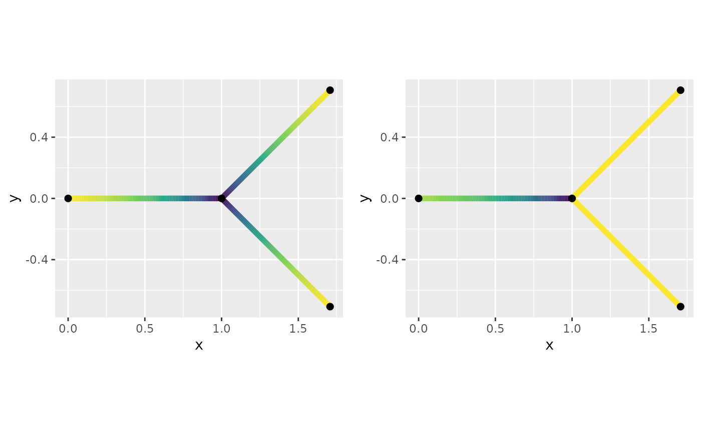
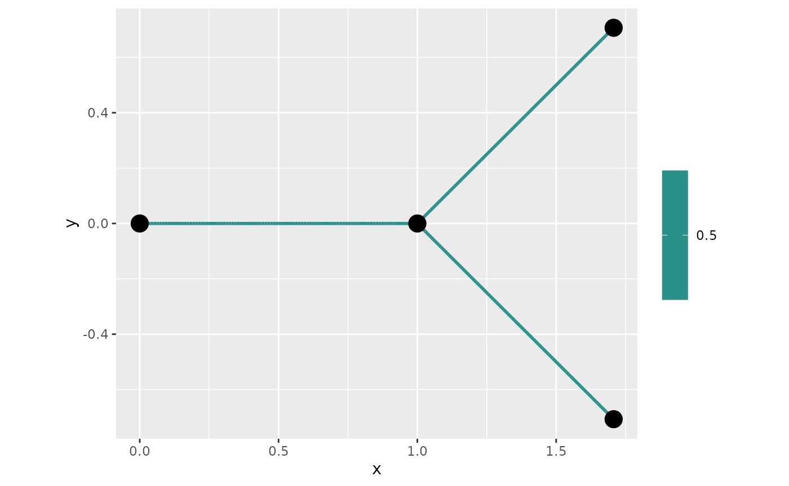

An example with directional models
David Bolin, Alexandre B. Simas, and Jonas Wallin
Created: 2024-08-08. Last modified: 2024-08-27.
Source:vignettes/directional_model.Rmd
directional_model.RmdIntroduction
This is a tutorial for working with Gaussian processes on directional tree graphs. We introduce how the directional models differ from the non-directional. We also show how a few different boundary conidtions gives different behavior, with boundary conditions we mean how edges are connected. As the basic graph we create a very simple directional graph .
edge1 <- rbind(c(1,0),c(0,0))
edge2 <- rbind(c(1+sqrt(0.5),sqrt(0.5)),c(1,0))
edge3 <- rbind(c(1+sqrt(0.5),-sqrt(0.5)),c(1,0))
edges = list(edge1,edge2,edge3)
graph <- metric_graph$new(edges = edges)
graph$plot(direction = T)
Symmetric vs directional
In Gaussian random fields on metric graphs we have studied the symmetric Whittle–Matérn field which is the solution to Here we instead we instead looking for solution on the form We only consider the case . The only difference between the process is how the boundary conditions are constructed. For the symmetric field we impose the boundary condition for a vertex While the default boundary condition for the directional graph for vertex is to let the outgoing edges, $ ^s_v$, equal the average of the in-going edges, $ ^s_v$ i.e. We explore the covariance of both upstream dependence (against the direction) by examining node located at the middle of the first edge, , and the downstream behaviour through the node .
graph$build_mesh(h=0.01)
kappa <- 0.1
tau <- 1
P1 <- c(1, 0.5)
P2 <- c(3, 0.5)
C.dir <-spde_covariance(P1,kappa=kappa,tau=tau,
alpha=1,
graph=graph,
directional = T)
C.sym <-spde_covariance(P1,kappa=kappa,tau=tau,
alpha=1,
graph=graph,
directional = F)
fig.sym <- graph$plot_function(X = C.sym,line_width=2,vertex_size=2)
fig.dir <- graph$plot_function(X = C.dir,line_width=2,vertex_size=2)
C.dir2 <-spde_covariance(P2,kappa=kappa,tau=tau,
alpha=1,
graph=graph,
directional = T)
C.sym2 <-spde_covariance(P2,kappa=kappa,tau=tau,
alpha=1,
graph=graph,
directional = F)
fig.sym2 <- graph$plot_function(X = C.sym2 ,line_width=2,vertex_size=2)
fig.dir2 <- graph$plot_function(X = C.dir2 ,line_width=2,vertex_size=2)
plot_grid(fig.sym + theme(legend.position="none"),
fig.dir + theme(legend.position="none"),
fig.sym2 + theme(legend.position="none"),
fig.dir2 + theme(legend.position="none"))
Here one can see that the with directional model creates independence between edges that are meeting by inwards direction.
Special boundary condition
When imposing the boundary condition or the variance of the field is non-istorpic. Where the symmetric boundary conditions the variance around vertex of degree three has a smaller variability, while for the directional only the outward direction creates a smaller variability.
kappa = 1 #change to larger value for better figures
var.dir <-spde_variance(P2,kappa=kappa,tau=tau,
alpha=1,
graph=graph,
directional = T)
var.sym <-spde_variance(P2,kappa=kappa,tau=tau,
alpha=1,
graph=graph,
directional = F)
fig.sym <- graph$plot_function(X = var.sym ,line_width=2,vertex_size=2)
fig.dir <- graph$plot_function(X = var.dir ,line_width=2,vertex_size=2)
plot_grid(fig.sym + theme(legend.position="none"),
fig.dir + theme(legend.position="none"))
In Ver Hoef, Peterson, and Theobald (2006) they introduced a different type of boundary condition namely If one imposes this boundary condition one gets that variance of the Gaussian processes on the graph is isotropic. In one line we can change the boundary conditions so they follow these boundary conditions:
## Warning in graph2$setDirectionalWeightFunction(f_in = function(x) {: The
## constraint matrix has been deletedAnd we can see that the variance now isotropic:
C<-spde_variance(kappa=kappa,tau=tau,
alpha=1,
graph=graph2,
directional = T)
graph2$plot_function(X = C, plotly = F)
However, the isotropic processes it creates non energy conserving conditional expectations, in that the posterior expectation of the outward direction is greater then the average of the inwards direction on a vertex of degree greater than two. This can be seen by adding two observations on the edge and plot the posterior mean of the field
PtE_resp <- rbind(c(2,0.5),
c(3,0.5))
resp <- c(1,1)
Eu <- MetricGraph:::posterior_mean_obs_alpha1(c(0,tau, kappa),
graph2,
resp,
PtE_resp,
graph2$mesh$PtE,
type = "PtE",
directional = T)
fig<- graph2$plot_function(X = Eu, plotly = TRUE)
fig <- fig %>% layout(scene = list( camera=list( eye = list(x=-2., y=-0.8, z=.5))))
figWhile for there is no increase in energy.
Eu <- MetricGraph:::posterior_mean_obs_alpha1(c(0,tau, kappa),
graph,
resp, #resp must be in the graph's internal order
PtE_resp,
graph$mesh$PtE,
type = "PtE",
directional = T)
fig <- graph$plot_function(X = Eu, plotly = TRUE)
fig <- fig %>% layout(scene = list( camera=list( eye = list(x=-2., y=-0.8, z=.5))))
fig